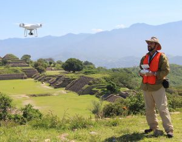
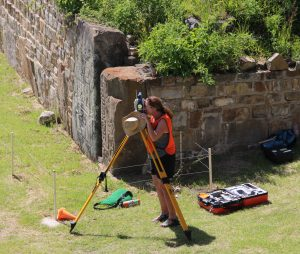
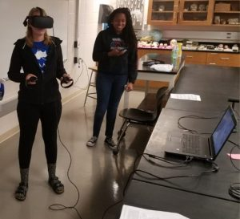
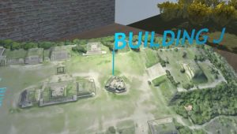

The primary objective of the Monte Albán Digital Archaeology Project (MADAP) is to collect and analyze digital data to shed light on the function, role, and meaning of the Main Plaza through time. In addition, the MADAP seeks to share this information with the public through a variety of innovative digital visualization tools.
Much of the data utilized by the MADAP was collected in the field through total station mapping and drone-aided aerial photogrammetry of the site’s Main Plaza. We are carrying out a microtopographical study of the Main Plaza’s surface to gain a better understanding of spatial relationships and subsurface deposits. We are also using a host of GIS tools to explore the function, use, and meaning of Monte Albán’s Main Plaza. In addition, we have used these data to generate 3D renderings of the Main Plaza architecture and to develop a virtual reality environment.
UAV-Mapping
We utilized a UAV (unmanned aerial vehicle) or “drone” to collect digital photos and videos of the Main Plaza and surrounding areas. With the help of a supercomputer, we are processing these photogrammetric data to create a high resolution topographic maps. The final result will be the most accurate map ever made of Monte Albán’s Main Plaza. We are also creating 3D models of all the structures on the Main Plaza to carry out volumetric measurements and aid interpretation. See examples of the results of this work on the Visualizations page.
{kind=link}
Total Station Mapping
Our team used a robotic total station to generate a detailed topographic map of the Main Plaza that provides resolution of less than a centimeter. More than 18,000 points were registered and analysis results are underway. We plan to link this microtopographic study of the plaza with our analysis buried “anomalies” discovered by the geophysical survey. These data may also shed light on other plaza dynamics, such as drainage and patterns of access and use.
{kind=link}
3D Models
Videos
Visualization of Main Plaza (fly-over from West):
Building J:
Building L:
Visualization of Main Plaza (fly-over from North):
Visualization of Ballcourt:
3D Printing

Virtual Reality
The Monte Albán Virtual Reality Laboratory (MAVRL) is a virtual reality project that falls under the umbrella of the Monte Albán Digital Archaeology Project. MAVRL allows users to experience, explore, and learn about the beauty and monumentality of Monte Albán, the famous UNESCO World Heritage Site in Oaxaca, Mexico. The entirely immersive 3D environment of the Prehispanic capital brings an accurate representation of the archaeological site into virtual space.
{kind=link}
In the summer of 2017, a DJI Phantom 4 Pro+ drone was used to take over 15,000 photos of the Main Plaza of Monte Albán. These photos were processed using Agisoft PhotoScan Professional software to digitally reconstruct the Main Plaza and surrounding Architecture producing a photorealistic 3D representation, and other highly accurate maps for archaeological study. A year later, Dr. Alex Elvis Badillo and Dr. Marc N. Levine developed the project MARVL to push the digital data captured in 2017 further beyond mere maps and 3D renderings.

MAVRL – the vision
Design VR environments where a user can
go to Monte Albán and…
…experience what it is like to be at the site.
…explore and interact with the main plaza and buildings.
…test hypotheses using virtual tools.
{kind=link}
With this guiding vision, VR environments created through this project will allow the user to delve into topics such as…
- Iconographic studies
- Archaeo-astronomy
- Geophysical exploration
- Digital restoration/reconstruction
- …and many more!
As a pilot study, Badillo and Levine decided to focus on Building J located on the south side of the Main Plaza at Monte Albán. The goal was to create a stand-alone VR environment, centered on Building J where the user can take a closer look at one of Monte Albán’s most interesting structures. The façade of Building J features a series of carved stones with diverse glyphs. Researchers still debate the interpretation of these stones, and they remain one of the biggest mysteries of Monte Albán. MAVRL’s Building J VR environment provides a 3D audio/visual tour of the unique building and carved stones, giving users an immersive and hands-on experience to learn and explore one of the most fascinating archaeological sites in all of Mesoamerica.
{kind=link}
Making the Building J VR environment was a collaborative effort. Dr. Javier Urcid, archaeologist and specialist in Zapotec iconography, and Matthew Brennan, archaeologist and specialist in VR applications for archaeology, were brought in for their expertise. Currently, graduate student Ashley Baysinger of Indiana State University, is helping to prepare a series of surveys to help in the assessment of the Building J VR environment as an effective tool for education.
{kind=link}
Check out the videos below!
Building J 360 video
Developing MARVL’s Building J environment
MAVRL tutorial